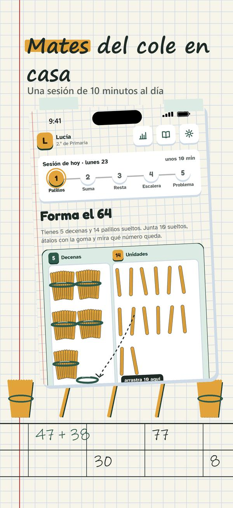
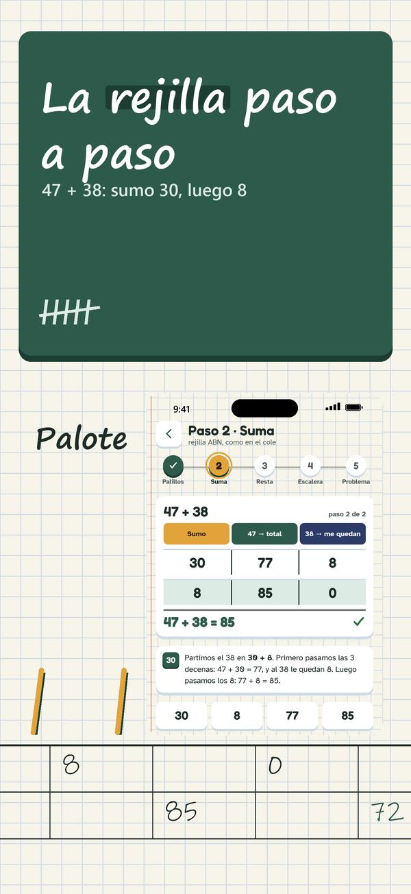
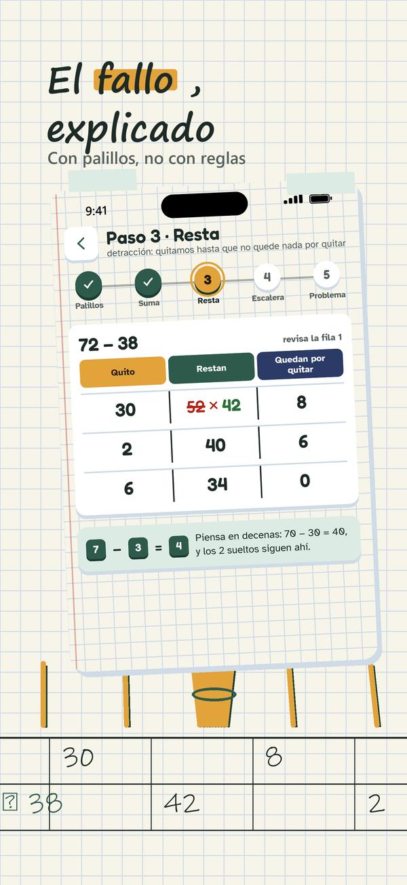

Palote: método ABN en casa
Palillos y rejilla paso a paso
Palote lleva a casa las mates que tu peque hace en el cole con el método ABN. Cada día prepara una sesión de unos 10 minutos según su curso (de Infantil a 6.º de Primaria): formar números con palillos y decenas, sumar y restar con la rejilla, la escalera y un problema. Si algo sale mal, Palote enseña dónde y por qué, con los mismos pasos que en clase.



- Sesión diaria de 5 pasos según el curso
- Bandeja de palillos: junta 10 y átalos con la goma
- Rejilla de suma y resta paso a paso, como en el cole
- Guía para familias: qué pide cada deber
- Escalera, comparación, multiplicación y división
- El fallo explicado con palillos, no con reglas
- Progreso del trimestre y fallos que más se repiten
- Varios peques, iCloud y otro adulto con quien compartir
Descargar en el App StoreAyuda · Privacidad